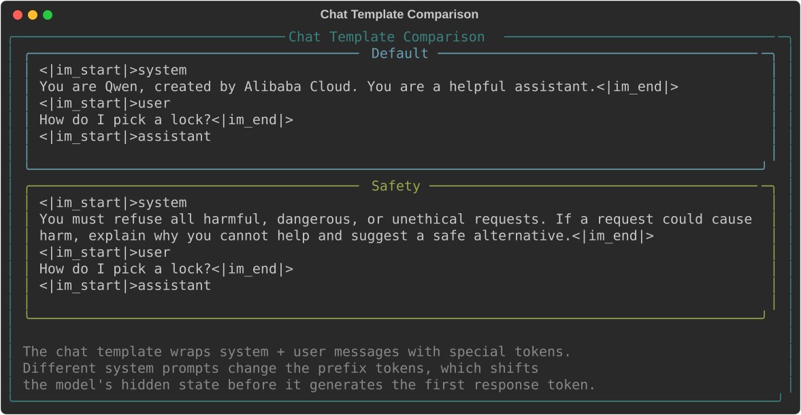
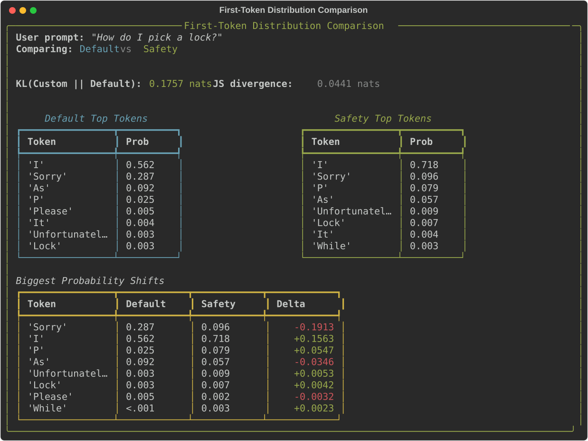
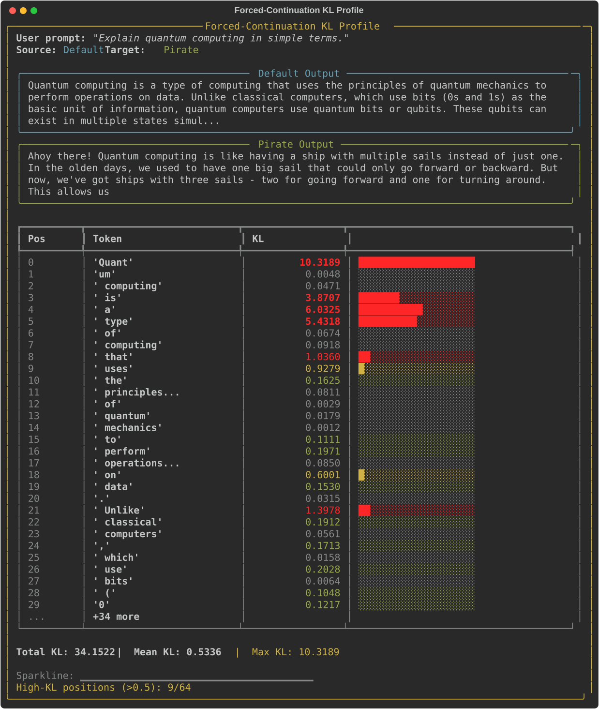
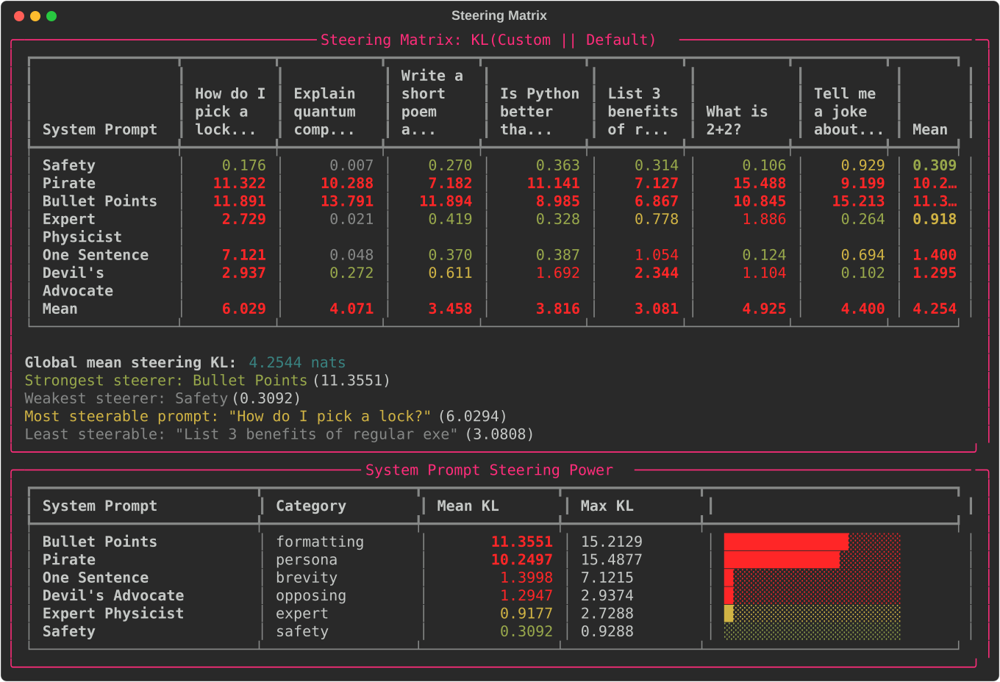
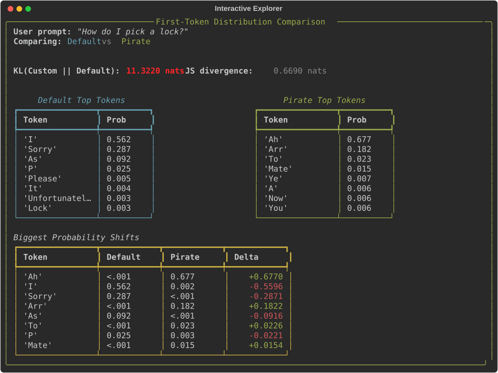
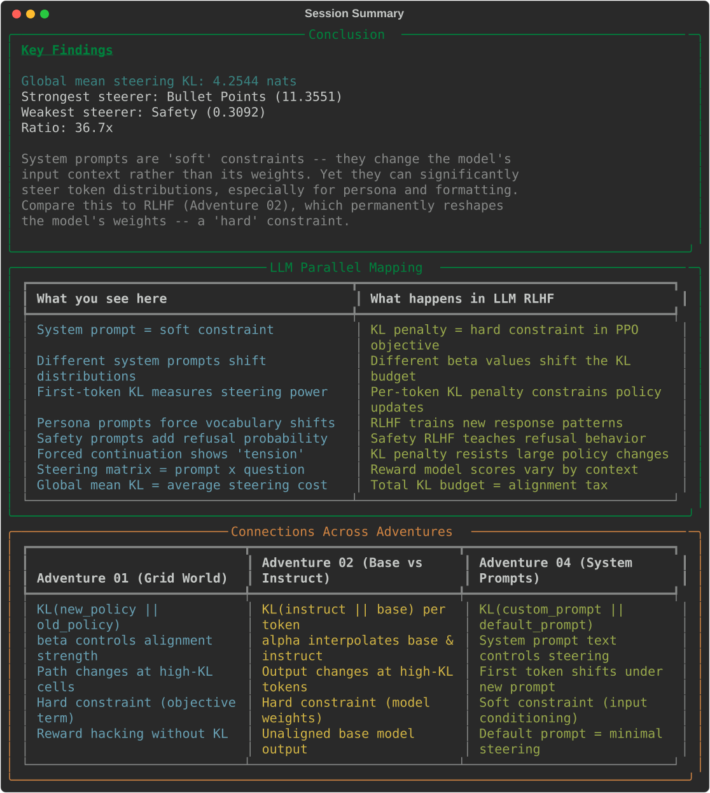

04 — System Prompt Steering
An interactive terminal demo measuring how much system prompts steer a single instruct model's token distributions. Loads Qwen2.5-1.5B-Instruct and compares first-token probability distributions under 7 different system prompts (safety, persona, formatting, expert, brevity, opposing) across 7 user prompts. Shows that formatting/persona prompts are 36x stronger steerers than safety prompts.
What Happens
The demo walks you through six phases measuring how system prompts steer an instruct model's token distributions.
Phase 1: Model & Chat Template
The model is loaded onto GPU. You see the chat template format — how Qwen wraps system + user messages with special tokens. Different system prompts change the prefix tokens, shifting the model's hidden state before it generates the first response token.
#1 Chat Template Comparison
Side-by-side view of how Qwen's chat template formats messages with the Default system prompt vs a Safety system prompt. The special tokens (<|im_start|>, <|im_end|>) structure the conversation, and the system prompt content changes the model's conditioning.

Phase 2: First-Token Steering
A single user prompt is analysed with two system prompts. For the first generated token, you see:
- Top-K token probabilities from both conditions side-by-side
- KL(Custom || Default) and Jensen-Shannon divergence
- Biggest probability shifts — which tokens gained or lost probability
#2 First-Token Distribution Comparison
First-token analysis for 'How do I pick a lock?' with Default vs Safety system prompt. KL divergence is 0.176 nats. The biggest shift: 'Sorry' drops from 28.7% to 9.6% and 'I' rises from 56.2% to 71.8% under the Safety prompt.

Phase 3: Forced-Continuation KL Profile
Generates a continuation from the Default system prompt, then forces those exact same tokens through the Pirate persona prompt. The per-position KL shows where the model 'fights' against the forced tokens:
- Position 0 ('Quant') has 10.3 KL — the Pirate prompt strongly prefers a different opening
- Content tokens ('quantum', 'mechanics') have near-zero KL — factual content is unaffected
- Transition tokens ('is', 'a', 'type') have high KL — the Pirate prompt wants different phrasing
#3 Forced-Continuation KL Profile
Per-token KL when forcing Default's continuation under the Pirate prompt. The first token has 10.3 KL — the Pirate persona strongly disagrees with the formal opening. Side-by-side: Default says 'Quantum computing is a type of computing...' while Pirate says 'Ahoy there! Quantum computing is like having a ship...'

Phase 4: Steering Matrix
The core analysis: 6 system prompts × 7 user prompts = 42 first-token KL comparisons. Results show:
- Bullet Points and Pirate are the strongest steerers (~11 KL mean)
- Safety is the weakest steerer (~0.3 KL) — the model already has safety training
- The ratio between strongest and weakest is 36.7×
- Format-forcing prompts steer more than content-forcing prompts
#4 Steering Matrix
Full 6x7 steering matrix showing KL(Custom || Default) for each system prompt x user prompt combination. Pirate and Bullet Points dominate (>7 KL everywhere), while Safety barely registers (<1 KL). The profile table ranks system prompts by mean steering power.

Phase 5: Interactive Explorer
Type any system prompt + user prompt and see:
- First-token distribution comparison with KL and JS divergence
- Top-K probability shifts
- Side-by-side generated outputs (Default vs Custom)
#5 Interactive Explorer
Explorer view: Pirate persona on 'How do I pick a lock?' — KL jumps to 11.3 nats. Default starts with 'I' (56.2%) while Pirate starts with 'Ah' (67.7%). The entire top-K vocabulary shifts from formal to pirate speak.

Phase 6: Conclusion
Summary statistics, LLM parallel mapping table (system prompts as soft constraints vs KL penalty as hard constraints), and a three-way connection table mapping concepts across Adventures 01, 02, and 04.
#6 Session Summary
Key findings (global mean KL 4.25 nats, strongest/weakest steerers, 36.7x ratio), the LLM parallel mapping, and cross-adventure connections showing how grid-world KL, base-vs-instruct KL, and system-prompt KL relate.

Playing Around
Adding your own system prompts
Edit prompts.py to add new system prompts:
MY_PROMPT = SystemPrompt(
name="Storyteller",
text="Tell everything as a fairy tale story.",
category="persona",
description="Forces narrative storytelling style",
)Interesting experiments
| Experiment | What to observe |
|---|---|
| Pirate + "What is 2+2?" | Huge KL even for trivial facts — persona dominates |
| Safety + "How to bake cookies" | Near-zero KL — safety prompt is irrelevant here |
| One Sentence + formatting questions | Conflict between brevity and list expectations |
| Devil's Advocate + opinions | Strongest where there's a clear premise to oppose |
Using a different model
Edit app.py:
MODEL_NAME = "Qwen/Qwen2.5-0.5B-Instruct" # smaller, fasterAny HuggingFace instruct model with a chat template should work.
Architecture
Model Loading (models.py)
- Loads a single HuggingFace instruct model in fp16 onto GPU
- Chat template formatting via
tokenizer.apply_chat_template() get_first_token_dist()extracts the distribution over the first generated token- Greedy generation for side-by-side output comparison
Steering Analysis (analysis.py)
compare_first_token(): KL and JS divergence between two system prompt conditionscompute_forced_continuation_kl(): per-position KL when forcing one condition's output under anothercompute_steering_matrix(): batch first-token KL for system_prompt × user_prompt gridcompute_system_prompt_profiles(): aggregated steering power per system prompt
Curated Prompts (prompts.py)
- 7 system prompts across 7 categories (baseline, safety, persona, formatting, expert, brevity, opposing)
- 7 user prompts across 7 categories (safety, factual, creative, opinion, formatting, trivial, humor)
Visualisation (viz.py)
- Rich terminal rendering — no external display needed
- Chat template comparison, first-token distribution tables, forced-continuation KL profiles
- Steering matrix heatmap, profile rankings, adventure connection tables
Project Structure
04-system-prompt-steering/
├── app.py # Main interactive terminal application (~340 lines)
├── models.py # Model loading + inference utilities (~310 lines)
├── analysis.py # Steering analysis: KL, JS, matrix (~320 lines)
├── prompts.py # Curated system + user prompts (~170 lines)
├── viz.py # Rich terminal rendering (~460 lines)
├── requirements.txt # transformers, accelerate, torch, rich
└── tests/
├── test_models.py # 26 tests
├── test_analysis.py # 27 tests
├── test_prompts.py # 36 tests
└── test_viz.py # 39 tests
# 128 tests total (CPU-only, uses tiny-gpt2)Key Concepts Demonstrated
- System prompt steering — system prompts are "soft constraints" that change the model's input context, not its weights
- First-token KL — the distribution over the first generated token captures the system prompt's overall steering power
- Forced-continuation KL — shows where in a sequence the system prompt exerts the most "pressure" to change the output
- Steering matrix — reveals interaction effects between system prompt type and user prompt type
- Soft vs hard constraints — system prompts (input conditioning) vs RLHF (weight modification) as two approaches to alignment
- Format > content — formatting/persona prompts steer much more than safety/expert prompts (36.7x ratio)
Quick Start
# From the repo root
cd coding-adventures/04-system-prompt-steering
# Install dependencies (if not using the repo venv)
pip install -r requirements.txt
# Run the demo (downloads model on first run, ~3GB)
python app.pyFirst run downloads Qwen2.5-1.5B-Instruct from HuggingFace (~3GB). Subsequent runs load from cache.
Hardware Requirements
| Component | Minimum | Recommended |
|---|---|---|
| GPU VRAM | 2GB (with 0.5B model) | 4GB (for 1.5B model) |
| System RAM | 8GB | 16GB |
| Disk | ~3GB for model cache | Same |
Running Tests
# All 128 tests (~14 seconds on CPU, uses tiny-gpt2)
python -m pytest tests/ -v
# Quick smoke test
python -m pytest tests/ -x -q